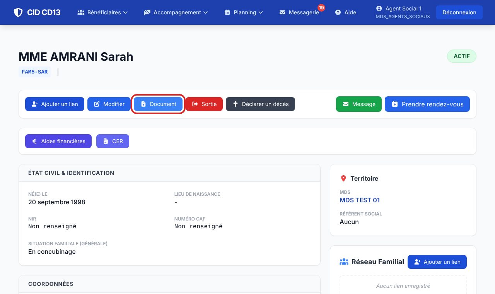
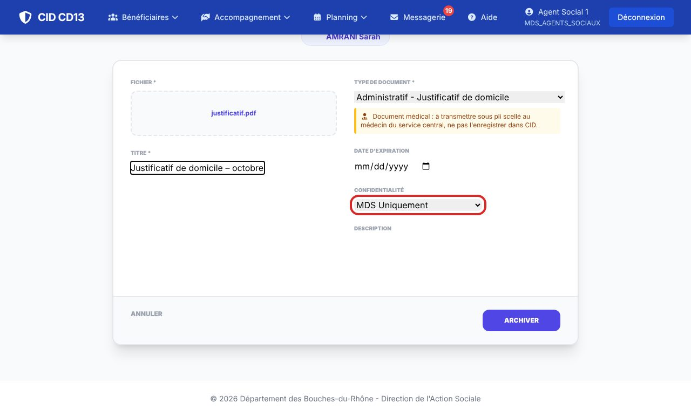
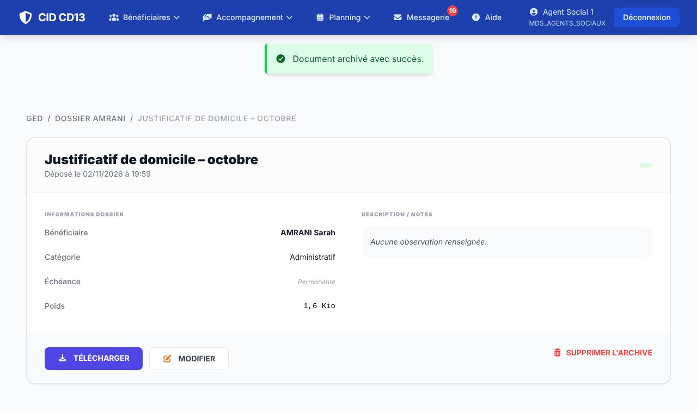
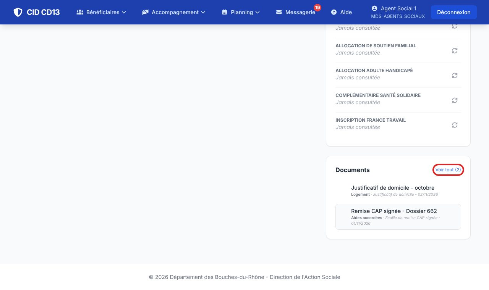
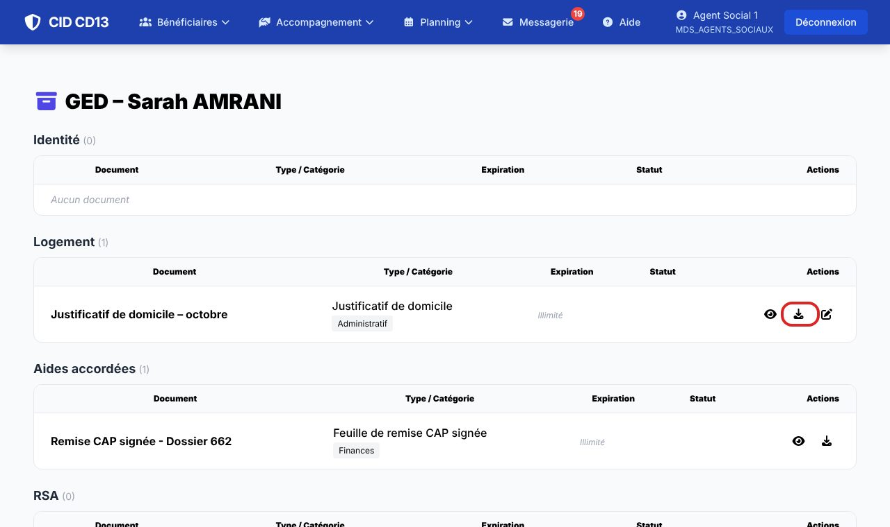
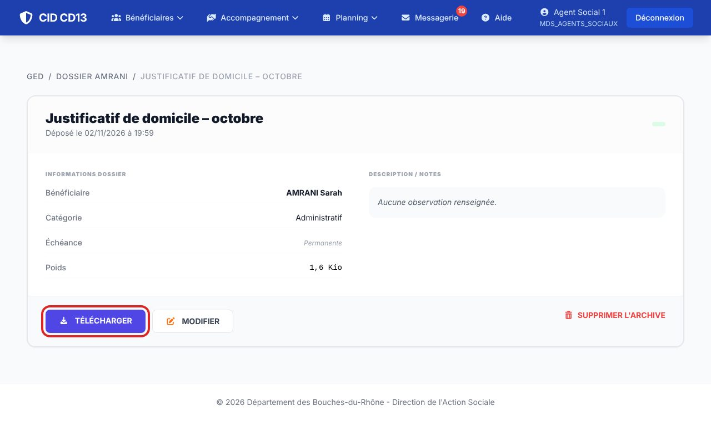

1Déposer un document



- Sur la fiche de l'usager, cliquez sur Document.
- Choisissez le fichier, donnez un titre et le type de document (une date d'expiration si besoin).
- Confidentialité : Public DITAS, MDS uniquement, ou Nominatif (agents autorisés).
- Cliquez sur Archiver.
Un document médical ne s'enregistre pas dans CID : il se transmet sous pli scellé au médecin du service.
2Consulter les documents



- La fiche usager affiche les derniers documents ; Voir tout ouvre la GED complète, classée par catégorie.
- Ouvrez un document pour le télécharger, le modifier (titre, type…) ou le supprimer.
Bon à savoir
- Les pièces déposées dans une demande d'aide ou jointes à un message arrivent aussi dans la GED de l'usager.
Cliquez sur une image pour l'agrandir. Le cadre rouge montre où cliquer ou quoi remplir. Toutes les données affichées sont fictives.